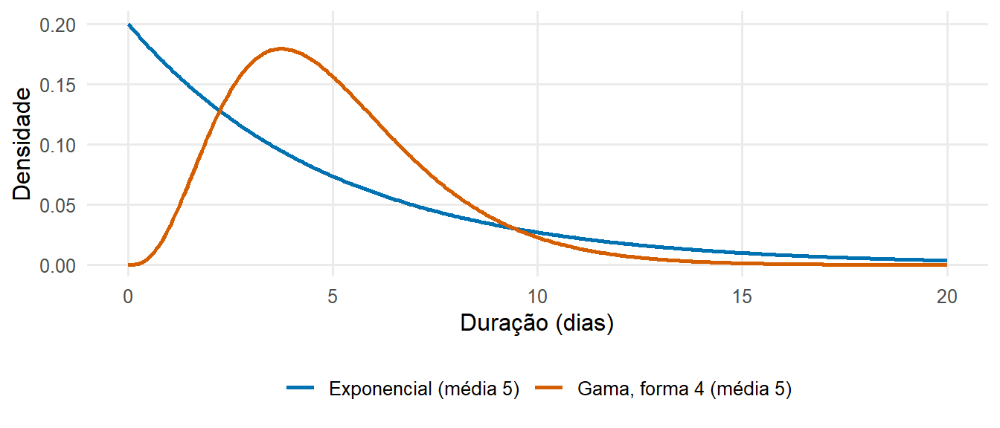
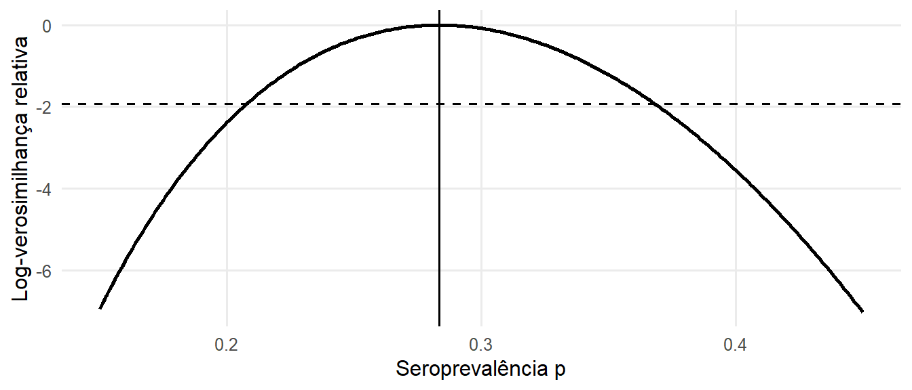

library(tidyverse)P2 Conceitos estatísticos e epidemiológicos
Aprendizagem preliminar — estatística e epidemiologia
NotaTradução provisória
Este capítulo foi traduzido do inglês e está em revisão. As observações são bem-vindas.
P2.1 Medidas de frequência de doença
| Medida | Definição | Exemplo |
|---|---|---|
| Risco (incidência cumulativa) | número de casos novos durante um período ÷ população em risco no início do período | proporção de crianças infetadas durante um surto de sarampo |
| Taxa de ataque | risco durante um surto (uma proporção, apesar do nome) | 512 de 763 rapazes acamados: 67% |
| Taxa de ataque secundária | casos novos entre os contactos de um caso ÷ número de contactos | proporção de contactos domiciliários infetados |
| Taxa de incidência | número de casos novos ÷ pessoas-tempo em risco | 150 casos de tuberculose por 100 000 pessoas-ano |
| Prevalência | número de casos existentes ÷ população num dado momento | proporção de crianças com parasitemia de malária num inquérito |
| Letalidade (case fatality ratio, CFR) | óbitos entre os casos ÷ número de casos | proporção de casos confirmados de doença por vírus Ébola que morrem |
| Letalidade por infeção (infection fatality ratio, IFR) | óbitos ÷ número de infeções (incluindo as infeções não detetadas) | proporção de todas as infeções por SARS-CoV-2, estimadas a partir de um inquérito serológico, que resultaram em óbito |
| Taxa de mortalidade | óbitos ÷ pessoas-tempo em toda a população | 45 óbitos por malária por 100 000 pessoas-ano em crianças com menos de cinco anos |
A prevalência, a incidência e a duração estão relacionadas: numa situação estável, e quando a prevalência é baixa,
\[ \text{prevalência} \approx \text{taxa de incidência} \times \text{duração média da doença}. \]
Esta relação reaparece nos modelos compartimentais, em que o número de indivíduos num compartimento é igual ao fluxo de entrada multiplicado pelo tempo médio passado nesse compartimento.
# Taxa de ataque no surto de gripe de 1978 num colégio interno
attack_rate <- 512 / 763
attack_rate## [1] 0.6710354# Prevalência a partir da incidência e da duração: 150 casos por 100 000 por ano,
# duração média da tuberculose não tratada de cerca de 2 anos
150 / 1e5 * 2 * 1e5 # casos prevalentes por 100 000## [1] 300A letalidade é uma propriedade dos casos detetados e depende da definição de caso e da intensidade da testagem: se os casos ligeiros não forem detetados, a letalidade sobrestima o risco de morte por infeção. Durante um surto, a letalidade calculada a partir dos casos notificados é também enviesada pelo atraso entre o início dos sintomas e o óbito (livro do curso: Severity: the case fatality ratio).
P2.2 Características dos dados de vigilância
Os modelos são frequentemente ajustados a dados de vigilância de rotina, que apresentam várias características a ter em conta (Centers for Disease Control and Prevention 2012):
- As definições de caso distinguem casos suspeitos, prováveis e confirmados; uma alteração da definição de caso altera os números notificados.
- Subdeteção: apenas uma parte das infeções resulta em sintomas, procura de cuidados, testagem e notificação. Esta proporção pode variar ao longo do tempo, por exemplo quando a capacidade de testagem aumenta.
- Atrasos de notificação: os casos são notificados dias ou semanas após o início dos sintomas, pelo que as contagens mais recentes estão incompletas (livro do curso: Reporting delays and nowcasting).
- Tipo de data: data de infeção, de início dos sintomas, de consulta, de colheita, de confirmação laboratorial ou de notificação. Cada data implica um atraso diferente em relação à infeção.
- Agregação: os sistemas de vigilância integrada das doenças e resposta (VIDR) e o DHIS2 reportam geralmente contagens semanais por distrito; as listas nominais têm uma linha por caso.
A curva epidémica — o número de casos por data de início dos sintomas — é a descrição básica de um surto e o principal dado de entrada dos modelos de transmissão. A epidemiologia descritiva segundo o tempo, o lugar e a pessoa é tratada em pormenor por Centers for Disease Control and Prevention (2012), lições 1 e 4 a 6.
P2.3 Distribuições de probabilidade
As distribuições de probabilidade descrevem a variabilidade das contagens e das durações. As seguintes são utilizadas repetidamente ao longo do curso:
| Distribuição | Tipo | Média | Variância | Utilização típica na modelação |
|---|---|---|---|---|
| Binomial(\(n\), \(p\)) | contagens de 0 a \(n\) | \(np\) | \(np(1-p)\) | número de infetados entre \(n\) contactos; número de seropositivos num inquérito |
| Poisson(\(\lambda\)) | contagens ≥ 0 | \(\lambda\) | \(\lambda\) | número de casos por dia ou por semana |
| Binomial negativa(\(\mu\), \(k\)) | contagens ≥ 0 | \(\mu\) | \(\mu + \mu^2/k\) | contagens sobredispersas; número de casos secundários (supertransmissão) |
| Exponencial(taxa \(r\)) | durações > 0 | \(1/r\) | \(1/r^2\) | tempo passado num compartimento de um modelo de EDO |
| Gama(forma \(a\), taxa \(b\)) | durações > 0 | \(a/b\) | \(a/b^2\) | período de incubação, intervalos serial e de geração, atrasos de notificação |
| Log-normal(\(\mu\), \(\sigma\)) | durações > 0 | \(e^{\mu + \sigma^2/2}\) | \((e^{\sigma^2} - 1)\, e^{2\mu + \sigma^2}\) | período de incubação |
| Normal(\(\mu\), \(\sigma\)) | contínua | \(\mu\) | \(\sigma^2\) | aproximações; distribuições a priori |
| Beta(\(a\), \(b\)) | proporções em (0, 1) | \(\dfrac{a}{a+b}\) | \(\dfrac{ab}{(a+b)^2(a+b+1)}\) | distribuições a priori para proporções |
No R, cada distribuição tem quatro funções: d... (probabilidade ou densidade), p... (função de distribuição acumulada), q... (função quantil) e r... (valores aleatórios), p. ex. dpois(), ppois(), qpois(), rpois().
dbinom(3, size = 20, prob = 0.1) # P(3 de 20 contactos infetados)## [1] 0.1901199ppois(10, lambda = 6) # P(no máximo 10 casos numa semana com média 6)## [1] 0.9573791qgamma(0.95, shape = 4, rate = 0.4) # percentil 95 de um atraso gama com média de 10 dias## [1] 19.38414pexp(5, rate = 1 / 5) # P(sair de um compartimento antes da sua duração média)## [1] 0.6321206O último resultado mostra uma propriedade importante dos modelos compartimentais baseados em equações diferenciais ordinárias: o tempo passado num compartimento segue uma distribuição exponencial, pelo que 63% dos indivíduos saem do compartimento antes da sua duração média e uma parte considerável permanece muito mais tempo. As distribuições reais dos atrasos são geralmente menos dispersas e são mais bem descritas por uma distribuição gama ou log-normal (Figura 1).

A distribuição binomial negativa inclui um parâmetro de dispersão \(k\); à medida que \(k\) aumenta, aproxima-se da distribuição de Poisson. Valores pequenos de \(k\) correspondem a contagens mais variáveis do que o esperado num modelo de Poisson (sobredispersão), o que é frequente nos dados de vigilância e no número de casos secundários por caso (livro do curso: Stochastic models).
P2.4 Estimação e intervalos de confiança
Uma estatística amostral, como uma proporção, estima um valor desconhecido da população com erro de amostragem. Um intervalo de confiança de 95% é construído de modo que, em amostras repetidas, 95% desses intervalos incluiriam o verdadeiro valor.
# Seroprevalência: 34 positivos em 120 testados (intervalo de confiança binomial exato)
binom.test(34, 120)$conf.int## [1] 0.2048557 0.3728205
## attr(,"conf.level")
## [1] 0.95# Taxa de incidência: 45 casos em 30 000 pessoas-ano (intervalo de confiança de Poisson exato)
poisson.test(45, T = 30000)$conf.int * 1e5 # por 100 000 pessoas-ano## [1] 109.4110 200.7118
## attr(,"conf.level")
## [1] 0.95Os intervalos de confiança refletem apenas o erro de amostragem aleatório; não têm em conta erros sistemáticos como o viés de seleção, os erros de classificação ou a subdeteção.
P2.5 Verosimilhança
A verosimilhança exprime quão prováveis são os dados observados para um dado valor de um parâmetro. Para 34 positivos em 120 testados, a verosimilhança de uma seroprevalência \(p\) é a probabilidade binomial \(L(p) = \binom{120}{34} p^{34} (1-p)^{86}\). A estimativa de máxima verosimilhança (EMV) é o valor de \(p\) que maximiza \(L(p)\); aqui é igual à proporção observada \(34/120\). Na prática, utiliza-se o logaritmo da verosimilhança, por ser numericamente mais conveniente.
log_lik <- function(p) dbinom(34, size = 120, prob = p, log = TRUE)
mle <- optimize(log_lik, interval = c(0.001, 0.999), maximum = TRUE)$maximum
c(mle = mle, observed = 34 / 120)## mle observed
## 0.2833345 0.2833333
O mesmo princípio é utilizado para estimar os parâmetros dos modelos de transmissão: o modelo prevê o número esperado de casos e selecionam-se os parâmetros que maximizam a verosimilhança das contagens observadas (livro do curso: Linking models to data). Os valores do parâmetro para os quais a log-verosimilhança se encontra a menos de 1,92 unidades do seu máximo formam um intervalo de confiança aproximado de 95% (Figura 2). Na inferência bayesiana, a verosimilhança é combinada com uma distribuição a priori (livro do curso: Bayesian model fitting).
P2.6 Modelos de regressão para dados de contagem
A regressão de Poisson modela o logaritmo da contagem esperada como uma função linear de variáveis explicativas. Um termo de desvio (offset) igual ao logaritmo da população (ou das pessoas-tempo) converte contagens em taxas; os coeficientes exponenciados são razões de taxas.
set.seed(1)
districts <- tibble(
district = paste("District", 1:12),
population = round(runif(12, 50000, 300000)),
coverage = round(runif(12, 0.5, 0.95), 2) # cobertura vacinal
) |>
mutate(cases = rpois(12, lambda = population * 2e-4 * exp(-3 * (coverage - 0.7))))
fit <- glm(cases ~ coverage + offset(log(population)), family = poisson, data = districts)
summary(fit)$coefficients## Estimate Std. Error z value Pr(>|z|)
## (Intercept) -6.566844 0.3575204 -18.367747 2.380913e-75
## coverage -2.773596 0.4703854 -5.896434 3.714418e-09exp(coef(fit)[["coverage"]] * 0.1) # razão de taxas por aumento de 10 pontos percentuais na cobertura## [1] 0.7577819A regressão de Poisson em função do tempo é também utilizada para estimar a taxa de crescimento de uma epidemia a partir das primeiras contagens de casos (livro do curso: Estimation of the reproduction number from the growth rate). Quando as contagens são sobredispersas, os erros-padrão de um modelo de Poisson são demasiado pequenos; deve então utilizar-se um modelo de quasi-Poisson (family = quasipoisson) ou binomial negativo (MASS::glm.nb()).
NotaSolução
binom.test(240, 80000)$conf.int * 1000 # taxa de ataque por 1 000## [1] 2.632897 3.403844
## attr(,"conf.level")
## [1] 0.95binom.test(6, 240)$conf.int # letalidade## [1] 0.009228601 0.053617475
## attr(,"conf.level")
## [1] 0.95c(negbin = var(rnbinom(1000, mu = 10, size = 2)), poisson = var(rpois(1000, 10)))## negbin poisson
## 61.016792 9.199243shape <- 9^2 / 5^2; rate <- 9 / 5^2
c(shape = shape, rate = rate, p_over_21 = 1 - pgamma(21, shape, rate))## shape rate p_over_21
## 3.24000000 0.36000000 0.02580851P2.7 Autoavaliação
P2.8 Recursos adicionais
- Centers for Disease Control and Prevention (2012): Principles of Epidemiology in Public Health Practice, curso gratuito de autoaprendizagem dos Centers for Disease Control and Prevention dos Estados Unidos (em inglês; as lições 1 a 3 e 5 são particularmente relevantes).
- Giesecke (2017): Modern Infectious Disease Epidemiology — uma introdução à epidemiologia das doenças infecciosas, incluindo a investigação de surtos e conceitos básicos de transmissão.
- Rothman (2012): Epidemiology: An Introduction — medidas de frequência de doença e de efeito.
- Kirkwood e Sterne (2003): Essential Medical Statistics — intervalos de confiança, taxas, regressão de Poisson e verosimilhança (capítulos sobre taxas e sobre verosimilhança).
- Diez et al. (2019): OpenIntro Statistics — um manual gratuito de introdução à estatística (https://www.openintro.org/book/os/).
- Pawitan (2001): In All Likelihood — uma exposição avançada da inferência baseada na verosimilhança.
- PATH/MACEPA, Foundational Epidemiology Knowledge (https://path-global-health.github.io/df-foundational-epi-skills/, em inglês) — uma breve revisão sobre medidas de frequência e de associação, desenhos de estudo, medidas de deteção de doença, padronização e confundimento, com um questionário e séries de exercícios.